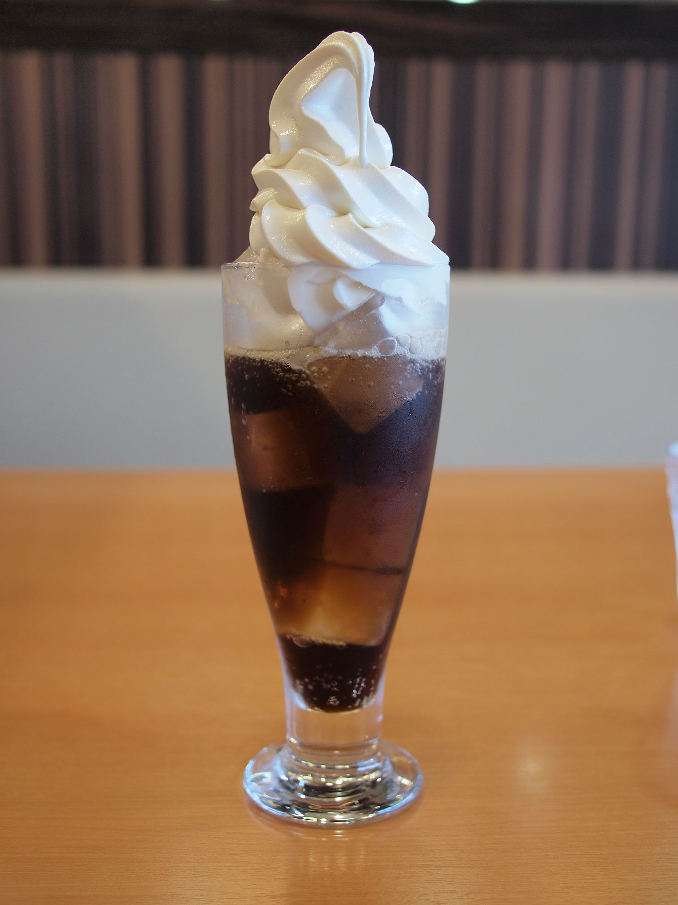

Recipe Description
This is one the simplest drink desserts that I enjoy, especially on rainy days when I'm stuck at home.
I remember back in high school, I would walk myself to the nearest diner and order myself a cup of Coke Float almost everyday.
Ingredients
- Vanilla ice cream or any flavor
- 1 litre Coke
- Whipped cream
Steps
- Take a spoonful of ice cream into a cup. Get as much ice cream as you want but don't fill the cup up fully.
- Pour coke into the same cup.
- Put whipped cream on top for a sweeter flavor and decoration.
Back to Recipes